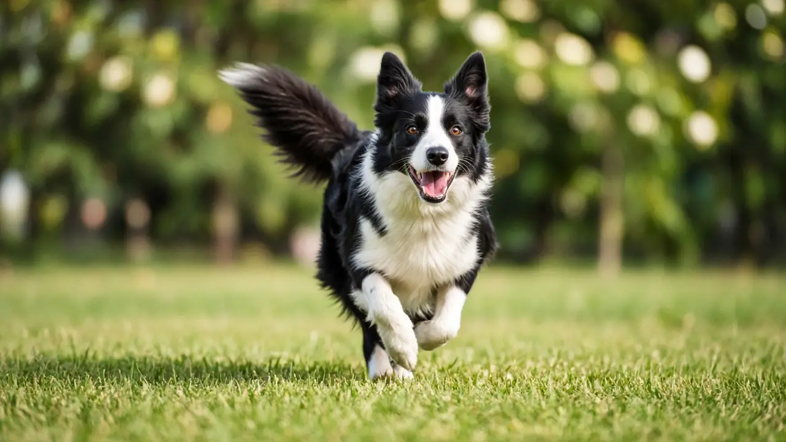

Why do dogs wag their tails? It signals arousal, not just happiness
Dogs wag their tails mainly as a social signal, and a wag shows that a dog is aroused or engaged, not always that it is happy. A 2024 Biology Letters review found tail wagging is linked with both positive and negative arousal. Studies from the University of Bari also found that dogs tend to wag more to the right for things they want to approach, such as their owner, and more to the left for things that make them want to withdraw, and that other dogs notice the difference.

A wag means arousal, not always joy
In a 2024 Biology Letters review, Silvia Leonetti, Andrea Ravignani and colleagues pulled together what is known about tail wagging. People tend to read any wag as a happy dog, but the review notes that quantitative studies have produced patchy results. Wagging is frequently associated with both positive and negative arousal, and several studies found that the time a dog spends wagging rises with its heart rate. There is indirect evidence linking wagging with oxytocin, especially when dogs are reunited with a familiar person, while links with the stress hormone cortisol are inconsistent across studies.
Left and right wags can mean different things
Angelo Quaranta, Marcello Siniscalchi and Giorgio Vallortigara reported in a 2007 Current Biology paper that tail wagging is asymmetric. As the 2024 review summarizes this line of work, dogs show a right-side wagging bias, linked to activity in the left side of the brain, for stimuli with a positive emotional value such as their owner or a familiar person. They show left-biased wagging, linked to the right side of the brain, for stimuli that make them want to withdraw, such as an unfamiliar dominant dog.
Other dogs read the direction of a wag
In a 2013 follow-up in Current Biology, Siniscalchi and colleagues showed dogs video images of other dogs wagging with a left or right bias. Dogs watching left-biased wagging had higher heart activity and scored higher for anxious behavior than dogs watching right-biased wagging. The authors say this shows dogs are sensitive to the tail signals of other dogs and could be useful for dog welfare work.
Why dogs wag more than wolves
The 2024 review asks why dogs wag their tails more often, and in more situations, than close relatives such as wolves. The authors offer two hypotheses to be tested: wagging may have increased as a side effect of selecting dogs for tameness and docility during domestication, or people may have favoured it directly because humans are drawn to rhythmic movement. Neither idea is proven yet, and the authors call wagging one of the most visible but least studied animal behaviors.
What this means for owners
- Read the whole dog, not just the tail. A wag tells you a dog is engaged. Check the body, ears, mouth and the situation before you approach (see dog behavior and reading stress).
- Do not assume a wagging dog is friendly. Since wagging also goes with negative arousal, a stiff dog wagging while it stares or growls is not inviting contact. Let unfamiliar dogs come to you, or not at all.
- The side is a subtle clue, not a rule. The left and right findings come from group averages in lab studies, so do not try to judge one dog's mood from wag direction alone.
- Notice changes. If your dog stops wagging, holds its tail oddly or yelps when the tail is touched, a vet check is worth it, since pain can change tail carriage (see dog health basics).
Frequently asked questions
Why do dogs wag their tails?
Mainly to communicate. A 2024 Biology Letters review found tail wagging goes with both positive and negative arousal, so a wag means a dog is engaged, not always happy.
Does a wagging tail mean a dog is happy?
Not always. Wagging is linked with both positive and negative arousal. Look at the whole body and the situation, and be careful with a stiff dog that wags while staring or growling.
What does it mean when a dog wags to the right or left?
Studies from the University of Bari found dogs tend to wag more to the right for things they want to approach, such as their owner, and more to the left for things that trigger withdrawal, such as an unfamiliar dominant dog.
Can dogs read other dogs' tail wags?
Yes. In a 2013 Current Biology study, dogs watching videos of left-biased wagging dogs had higher heart activity and more anxious behavior than dogs watching right-biased wagging.
Sources
- Leonetti S, Cimarelli G, Hersh TA, Ravignani A (2024). Why do dogs wag their tails? Biology Letters 20(1): 20230407. DOI 10.1098/rsbl.2023.0407, Biology Letters
- Quaranta A, Siniscalchi M, Vallortigara G (2007). Asymmetric tail-wagging responses by dogs to different emotive stimuli. Current Biology 17(6): R199-R201. DOI 10.1016/j.cub.2007.02.008, Current Biology
- Siniscalchi M, Lusito R, Vallortigara G, Quaranta A (2013). Seeing left- or right-asymmetric tail wagging produces different emotional responses in dogs. Current Biology 23(22): 2279-2282. DOI 10.1016/j.cub.2013.09.027, Current Biology
General education only, not veterinary advice. If you are worried about your dog, contact your vet; in an emergency, contact an emergency vet straight away.